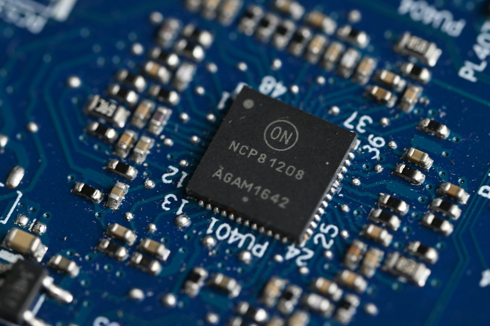
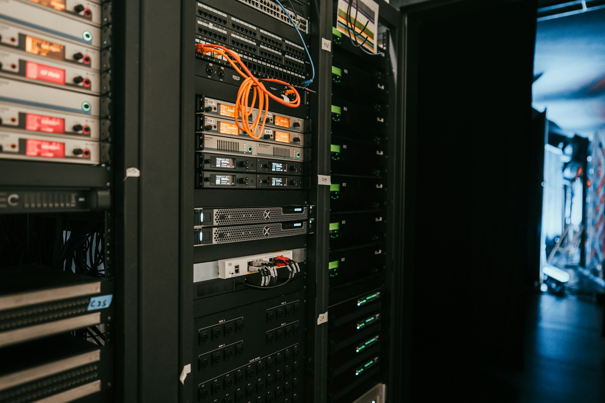
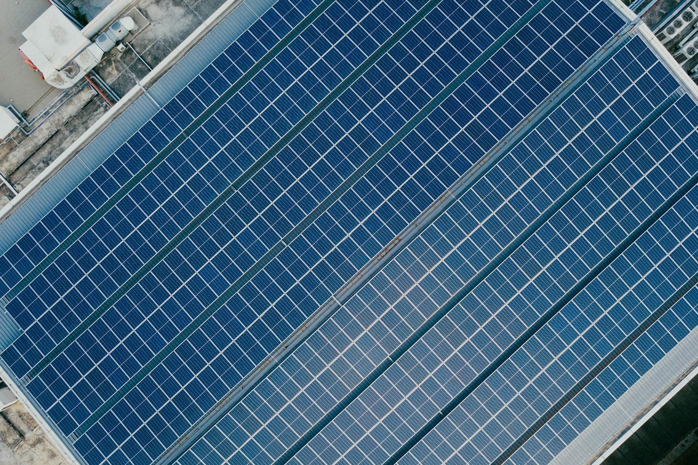
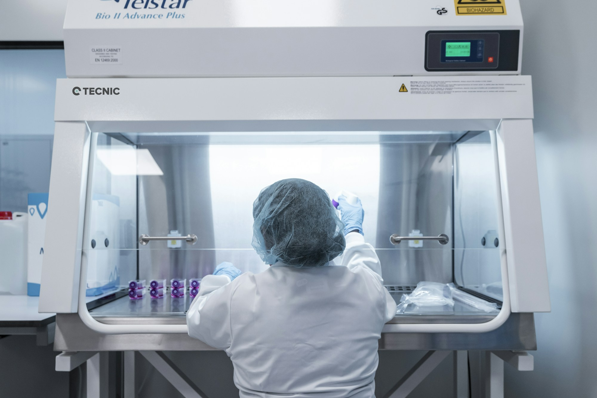

科技与硬件：产品之外，谁在创造价值？
计划从设备、零部件、制造与生态服务切入，比较产业链分工、利润分布和关键约束。
先看 Apple 公司样本 →从产业链到竞争格局。
理解价值如何创造，又流向哪里。
 筹备中
筹备中消费电子 · 智能设备 · 生态服务
查看研究方向 ↗
筹备中芯片 · 存储 · 数据中心
查看研究方向 ↗
筹备中平台 · 广告 · 企业软件
查看研究方向 ↗ 筹备中
筹备中电动车 · 电池 · 智能驾驶
查看研究方向 ↗潮玩 IP · 品牌 · 零售渠道
查看研究方向 ↗
筹备中新能源 · 储能 · 电网
查看研究方向 ↗
筹备中创新药 · 医疗器械 · 医疗服务
查看研究方向 ↗银行 · 保险 · 数字支付
查看研究方向 ↗计划从设备、零部件、制造与生态服务切入，比较产业链分工、利润分布和关键约束。
先看 Apple 公司样本 →计划围绕芯片设计、制造、先进封装与数据中心展开，观察需求、供给约束及资本开支。
计划比较广告、电商、游戏、订阅与云服务模式，关注用户、变现、资本开支和现金回报。
计划围绕销量、产品结构、价格、制造成本与现金流展开，连接整车、电池与智能驾驶产业链。
计划研究品牌、IP、渠道与复购之间的关系，区分短期热度、渠道扩张和持续经营能力。
计划从能源供需、发电、电网与储能切入，比较成本、周期、资本投入和产业链利润分布。
计划连接研发、临床、审批与商业化，关注产品管线、支付能力和现金消耗。
计划比较银行、保险与支付模式，关注利差、信用风险、资本约束和交易网络。
行业栏目目前展示研究方向，完整数据与比较将在来源核验后发布。